Ackermann Vehicle Control
Discover the vehicle model, Ackermann steering geometry and ROS 2 control implementation.
READ MOREExploring intelligent mobility through ROS 2 and Gazebo. AUROVIA integrates Ackermann vehicle control, autonomous navigation, multi-sensor perception and smart urban infrastructure within a custom simulated city.
An autonomous vehicle engineering project integrating robotics, vehicle dynamics, sensor systems, navigation and intelligent urban infrastructure.
AUROVIA (Autonomous Vehicle Simulation in a Smart Urban Environment) is a robotics and autonomous mobility project developed using ROS 2 and Gazebo. It combines a simulated Ackermann-steered vehicle with a custom-designed urban environment to provide a platform for developing, integrating and evaluating autonomous vehicle systems.
The simulation incorporates vehicle motion control, steering, acceleration, braking and odometry within a ROS 2-based system architecture. Environmental sensing is supported by integrated LiDAR, camera, IMU and GNSS sensors, providing the foundation for vehicle perception and navigation.
AUROVIA also explores autonomous movement through a structured urban road network using route planning and waypoint following. Its smart-city environment includes intersections, flyover infrastructure, traffic-light systems and dynamic day-and-night lighting, bringing vehicle engineering and urban infrastructure together in one simulation platform.
Integrated vehicle systems and smart infrastructure developed within the AUROVIA simulation environment.
Discover the vehicle model, Ackermann steering geometry and ROS 2 control implementation.
READ MOREExplore the integration of LiDAR, camera, IMU and GNSS within the vehicle system.
READ MORESee how odometry feedback and destination-based control guide vehicle movement.
READ MOREExplore traffic-light infrastructure, signal-state handling and stopping logic.
READ MORELearn how LiDAR data supports proximity monitoring and obstacle assessment.
READ MOREExplore AUROVIA's urban road network, intersections, flyover and infrastructure.
READ MOREExplore the simulated urban environment, road infrastructure and engineering designs developed for AUROVIA.
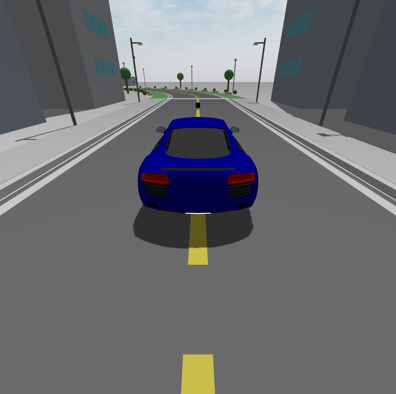
The vehicle positioned within the simulated city, showing the curved roadway and surrounding infrastructure.
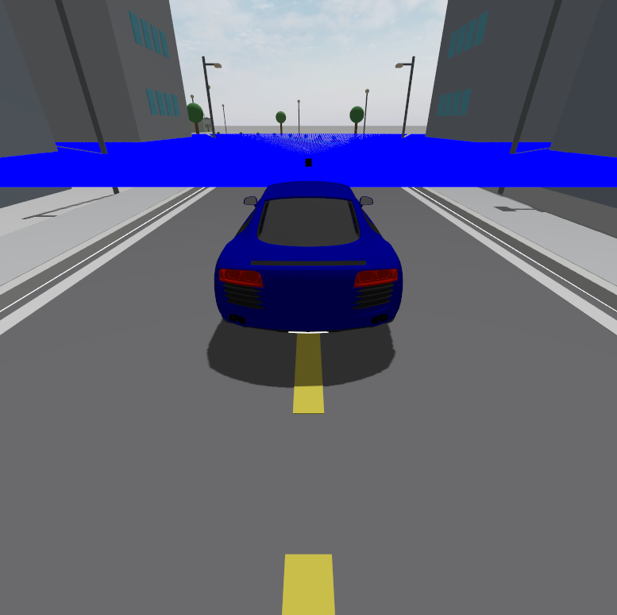
Visual representation of the vehicle's LiDAR sensor output within the Gazebo simulation environment.
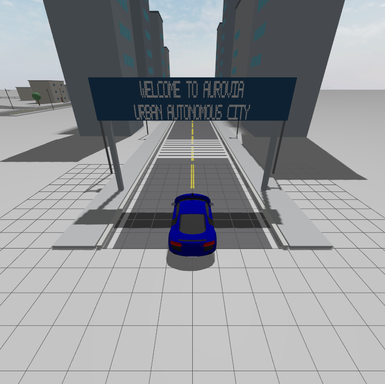
The entrance to the autonomous urban simulation environment.
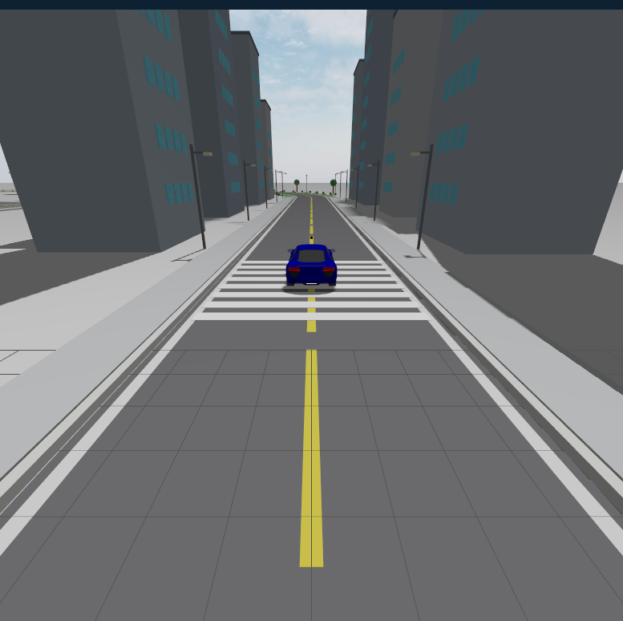
The simulated city under daytime lighting conditions.
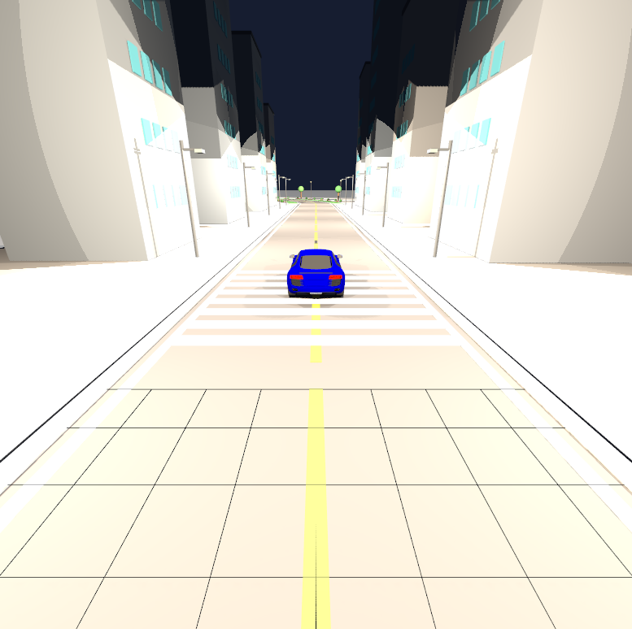
Dynamic night lighting and vehicle headlamp integration.
Watch the vehicle operating within the simulated urban environment and observe the transition between day and night.
The AUROVIA vehicle moving through the simulated urban road network.
Vehicle movement during the transition from daytime to nighttime lighting conditions.
Engineering diagrams supporting the AUROVIA vehicle and system design.
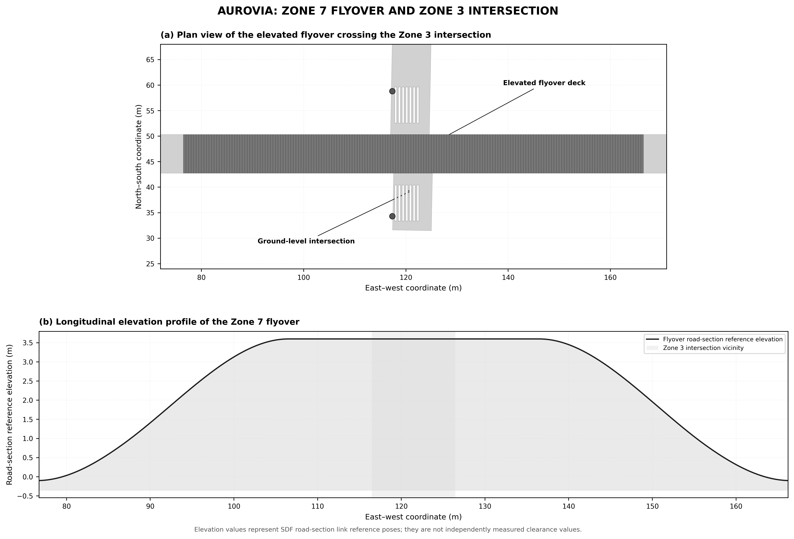
Detailed road connections and elevated urban infrastructure.
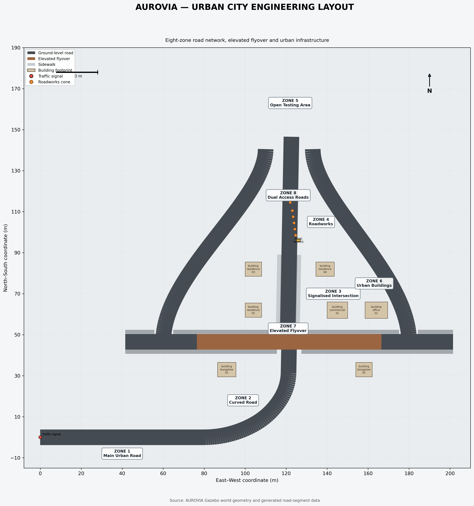
An overview of the custom-designed simulated city.
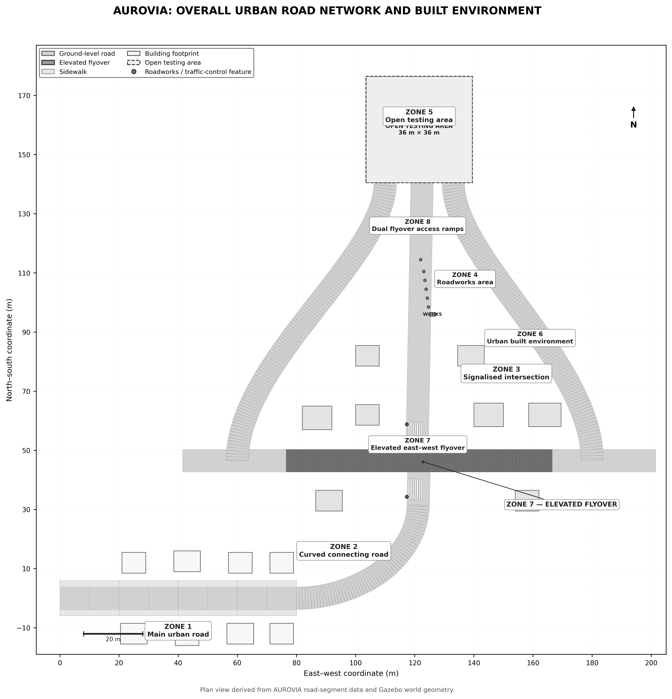
The road network supporting autonomous navigation.
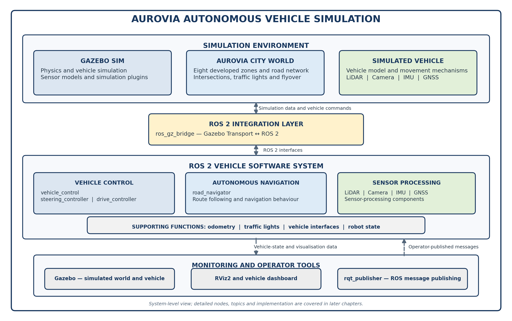
The architecture of the AUROVIA simulation system.
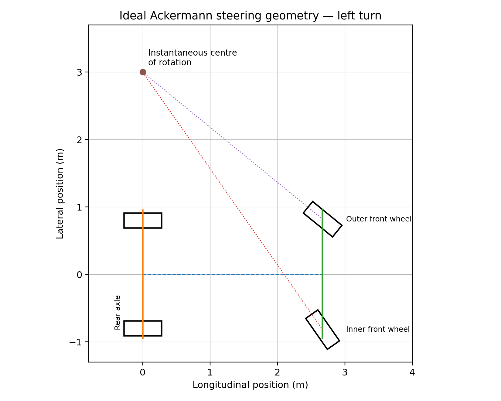
The steering geometry behind the simulated vehicle motion.
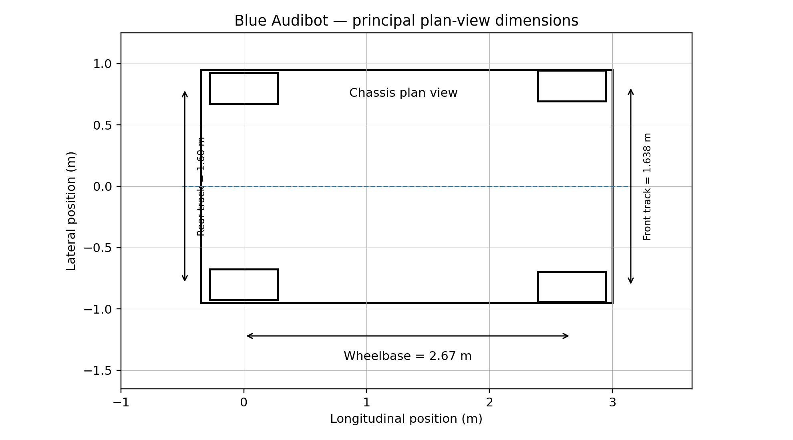
Vehicle dimensions used in the engineering design.
Access the technical report, project documentation and source code.
Explore the project implementation, engineering documentation and development repository.
Official DOI: https://doi.org/10.5281/zenodo.24345000
Suggested Citation:
Akinkunmi, A. A. (2026). AUROVIA — Autonomous Vehicle Simulation
in a Smart Urban Environment. Zenodo.
https://doi.org/10.5281/zenodo.24345000